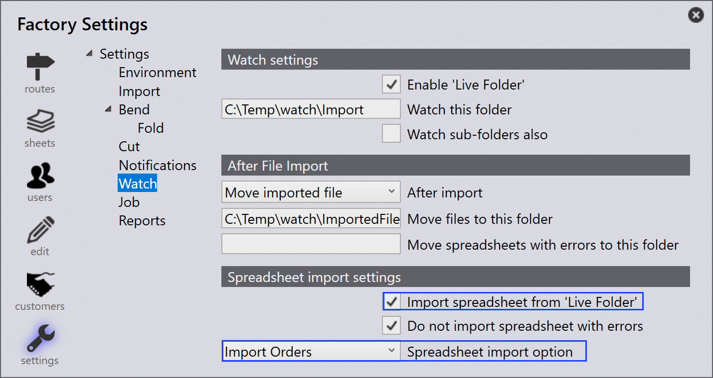

匯入訂單
可以使用以下方法建立或匯入訂單：
-
從試算表檔案匯入訂單。
-
透過監看設定自動匯入訂單。
-
從零件資料庫中的現有零件建立訂單。
-
從組件靜態排版建立訂單。
從試算表匯入訂單
-
導覽至 打開 → 匯入 _訂單…。

-
支援的試算表格式包括 CSV、XLSX 和 XML。
-
選擇所需的試算表檔案並按一下 打開。
-
匯入過程類似於工作/組件匯入工作流程。

| 您也可以直接將試算表拖放到訂單頁面以匯入訂單。 |
使用監看設定匯入訂單
-
在 監視設定 中啟用 從「即時資料夾」匯入電子表格 選項。
-
在 電子表格匯入選項 中選擇 匯入訂單。
-
配置應從中匯入訂單的資料夾位置。
-
系統持續監控配置的資料夾。
-
新增的試算表檔案會自動匯入訂單。

| 有關詳細的配置步驟，請參閱 Watch settings 文件。 |
從零件資料庫建立訂單
-
從零件資料庫中選擇所需的零件。
-
按一下右鍵並選擇 新… → 訂單 以開啟 新訂單 對話方塊。

-
輸入所需的詳細資訊，例如數量、到期日和優先順序。

-
按一下 確定 以建立訂單。
-
系統會自動切換到訂單頁面。
-
建立的訂單會顯示在訂單就緒頁面上以建立工作。
從組件建立訂單
-
在所需的組件上按一下右鍵。
-
選擇 新… → 訂單 以開啟 新訂單 對話方塊。

-
輸入所需的 組件計數。

-
按一下 確定 以建立訂單。